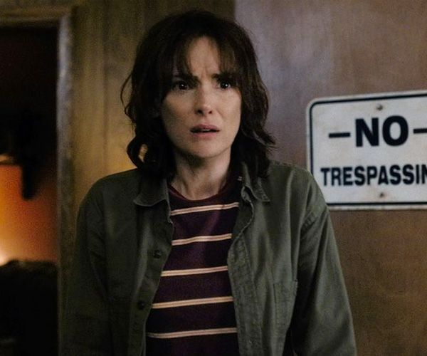

Joyce Byers (portrayed by Winona Ryder[6]) is the mother of Will and Jonathan Byers and is divorced from Lonnie Byers, the father of her two children. Joyce is a very caring and strong-willed woman who works as a retail clerk at Melvald's General Store in downtown Hawkins. She was born and raised in Hawkins and she attended Hawkins High School with the future chief of police, Jim Hopper, and her Season Two love interest, Bob Newby. In Season Three, she is planning to sell her house and move out of Hawkins, much to the dismay of Hopper who tries to convince her to go on a date with him. Joyce is more interested in figuring out why the magnets in her house keep failing (to the extent that she does not show up to the date that they had planned together) and while investigating the reason behind this, she and Hopper uncover a Russian conspiracy. After infiltrating a Russian lab beneath the new Starcourt Mall, where the Russians have opened another portal into the Upside Down, Joyce is forced to close the portal by turning off the Russian machine used to open it with Hopper in the room, causing his apparent death. She then takes guardianship of Eleven and moves with her and her two sons out of Hawkins three months later.
